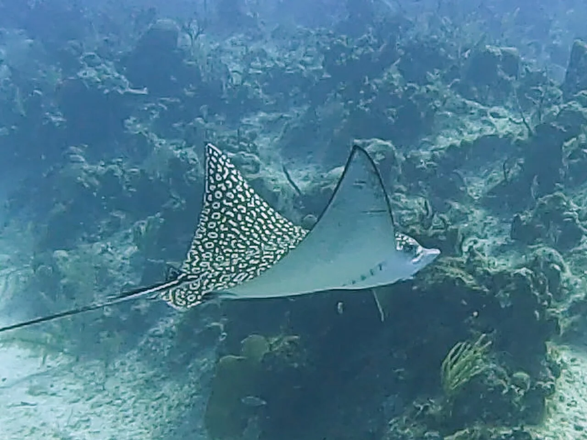

Пятнистый орляк.
Проследи за его поворотом: когда скат наклоняется, белые пятна на спине становятся видны целиком.

Пятнистый орляк над рифом · Фото Dan Schofield
Среда обитания · Луг морских трав у Флорида-Кис
Как узнать
Тёмная спина усыпана светлыми пятнами, а грудные плавники образуют широкие заострённые «крылья». Спереди у орляка выступает плоское рыло.
Что делает у дна
При поиске пищи орляк может разрывать песок рылом. Он питается прежде всего моллюсками, раковины которых дробит плоскими зубными пластинами.
Источник сведений о виде: Florida Museum of Natural History.